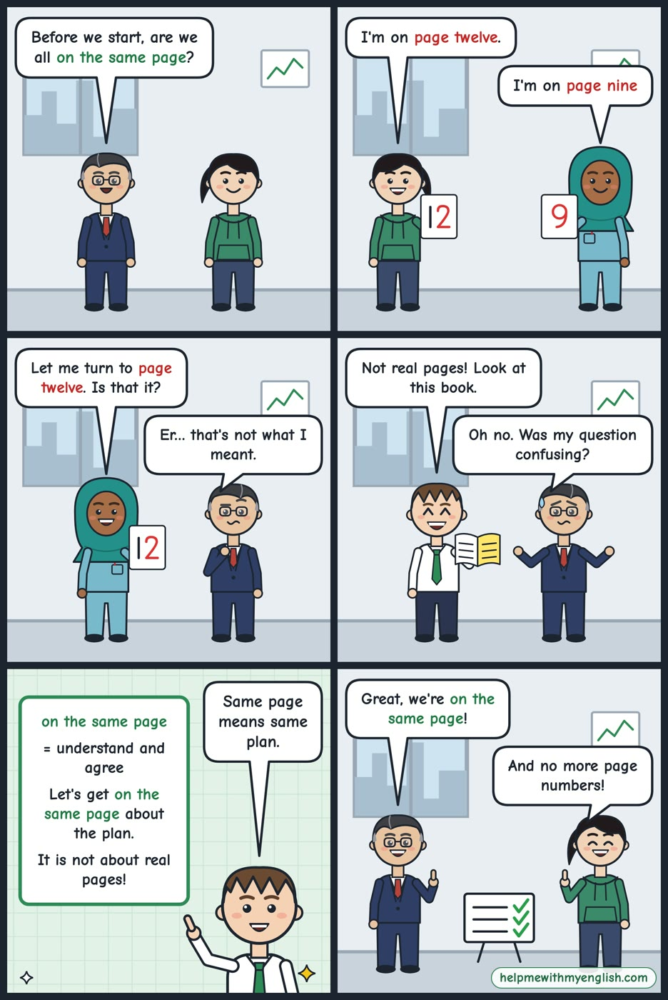

on the same page
To understand and agree about the same plan or idea.
Before we start, let's make sure we're all on the same page.
Tip: Use it with 'be' or 'get' (we're on the same page, let's get on the same page), often before a task starts or after a misunderstanding; it's about shared understanding, not literally sharing a document.
Hear it in conversation
Workbook
1. What does it mean?
In this conversation, what does "not on the same page" mean?
2. Fill the gap
Our manager sent a short summary after the call so that everyone would be about the deadline.
3. Choose the best reply
Mei: Ken and I keep planning different things for the trip. We need to sort this out.
4. Your turn: speak
Tell me about a time when you worked with other people on a task. How did you make sure the group worked well together?
Show an example answer
Last year I helped organise a small party for my friend's birthday with three other people. At the start we had very different ideas, so we had a quick call to make sure we were all on the same page about the budget and the date. After that, everything went smoothly.
Answer key: on the same page
- 1. B. They don't have the same understanding of the plan.
- 2. on the same page
- 3. B. Maybe you should sit down together and get on the same page before you book anything.
- 4. Example: Last year I helped organise a small party for my friend's birthday with three other people. At the start we had very different ideas, so we had a quick call to make sure we were all on the same page about the budget and the date. After that, everything went smoothly.
See it in a comic
